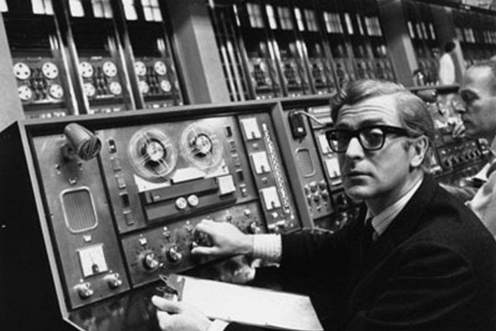

WEB vs INTERNET
A Internet é a infraestrutura global de redes interligadas que permite a comunicação entre computadores no mundo todo.
A Web (World Wide Web) é um serviço que funciona dentro da Internet, usando navegadores e páginas com links (HTTP/HTTPS).
Em resumo, a Internet é o meio físico e lógico, enquanto a Web é um sistema de informação que usa esse meio.
Historia da Internet
- Década de 1960: Durante a Guerra Fria, o Departamento de Defesa dos EUA iniciou o projeto que resultou na ARPANET (Advanced Research Projects Agency Network).
O objetivo era criar uma rede de comunicação descentralizada e resistente a ataques nucleares.
- 1969: O "marco zero" da Internet, quando a primeira mensagem, a tentativa de "lo" (login), foi enviada entre a Universidade da Califórnia em Los Angeles (UCLA)
e o Stanford Research Institute (SRI), embora a mensagem completa não tenha passado na primeira tentativa.
- 1971: Ray Tomlinson desenvolveu o e-mail, um ponto chave para a troca de informações, utilizando o símbolo "@" para separar o nome do usuário e o domínio da máquina.
- 1970s/1980s: Desenvolvimento e adoção dos protocolos TCP/IP (Transmission Control Protocol/Internet Protocol), que se tornaram o padrão para a comunicação entre redes.
- 1983: A ARPANET mudou oficialmente seus protocolos do NCP para o TCP/IP, um novo marco para a base da internet moderna.
- Finais da Década de 1980: O termo "internet" começou a ser mais amplamente utilizado à medida que a rede se expandia para além das universidades e do setor militar,
conectando redes menores em uma estrutura maior.

História da World Wide Web (Sistema de Informação)
- Marcos Principais da Web
- A Web surgiu mais tarde, como uma aplicação que utilizava a infraestrutura da Internet para organizar e exibir informações de maneira mais acessível e visual.
- 1989: Proposta da World Wide Web Tim Berners-Lee, um cientista do CERN (Organização Europeia para a Pesquisa Nuclear), propôs um sistema de gerenciamento de informações baseado
em hipertexto para facilitar o compartilhamento de documentos de pesquisa entre cientistas.
- 1991: Lançamento da primeira versão da Web Berners-Lee lançou a primeira versão da World Wide Web, introduzindo o primeiro navegador (chamado "WorldWideWeb", posteriormente Nexus), o protocolo HTTP e a linguagem HTML.
- 1993: Lançamento do NCSA Mosaic O NCSA Mosaic foi o primeiro navegador popular com interface gráfica, o que o tornou mais acessível para o público não técnico. Isso impulsionou a popularização da web fora do ambiente acadêmico e militar.
- 1994: Fundação do W3C O World Wide Web Consortium (W3C) foi criado por Tim Berners-Lee para estabelecer padrões e garantir a interoperabilidade da Web, evitando que navegadores e tecnologias fossem incompatíveis.
- Meados dos anos 1990: Comercialização e popularização O surgimento de provedores de acesso à Internet (ISPs) e a ampla difusão do uso de PCs permitiram o acesso massivo da população à Web, marcando o início da era da informação global.
- Anos 2000 em diante: Web 2.0 e além A Web evoluiu para a fase 2.0, marcada pela interatividade, colaboração e redes sociais, e continua a evoluir com tecnologias como a Internet das Coisas (IoT) e Inteligência Artificial.
| Data |
INTERNET |
WEB |
| Inicio |
1969 |
1989 |
Historia_internet
Historia_WEB